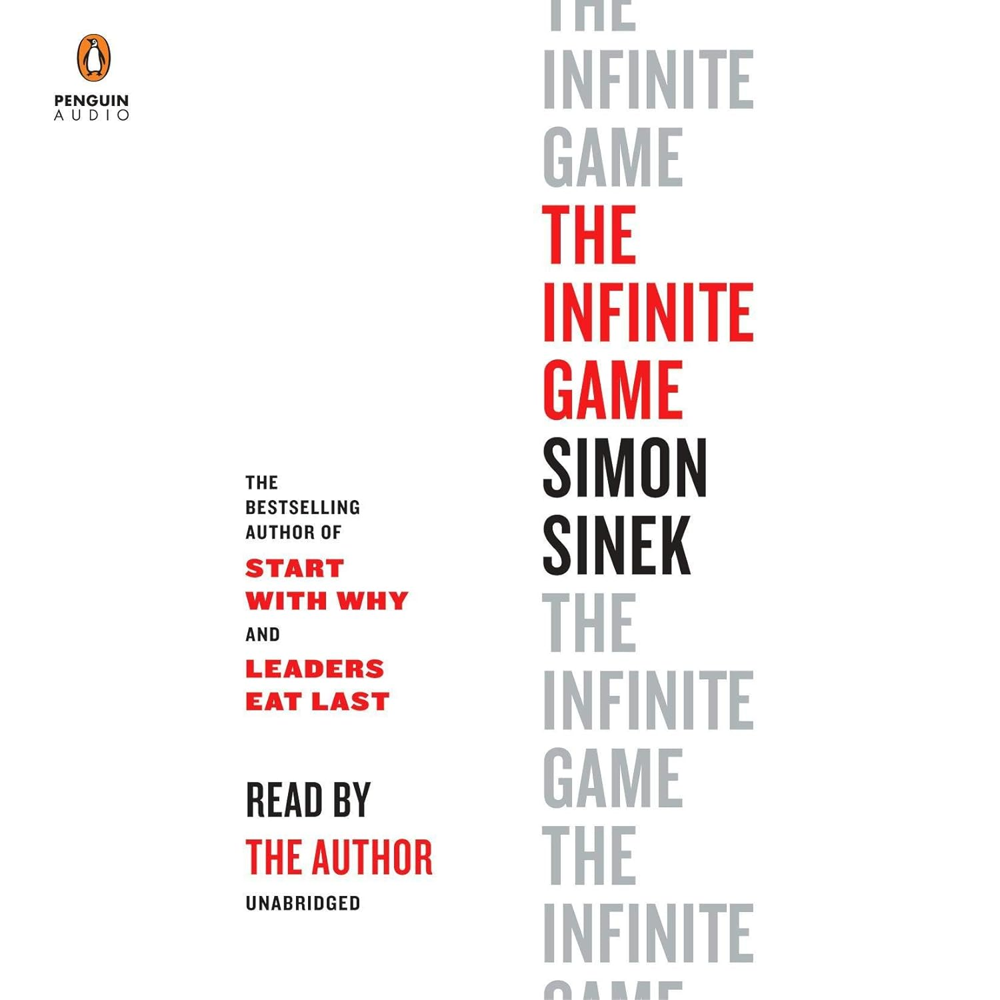

After several years of professional experience, I realized that technology is rapidly evolving, transforming the way we live and work. This realization sparked my passion for learning more about information systems and technology to stay at the forefront of these advancements and propel my career forward. My goal is to merge my expertise in finance and data with advanced technology skills, positioning myself to become a data scientist or data analyst. I aim to leverage these capabilities to drive data-driven decision-making and innovative solutions in the future.
| Course | Days & Times | Start/End Date |
|---|---|---|
| IS 7012 - WEB DEVELOPMENT WITH .NET | Asynchronous | 08/26/2024 - 10/15/2024 |
| IS 7024 - XML & WEB SERVICES | Asynchronous | 10/16/2024 - 12/07/2024 |
| IS 7050 - ENTERPRISE RESOURCE PLANNING 1 | Asynchronous | 10/16/2024 - 12/07/2024 |
| IS 8034 - BIG DATA INTEGRATION | Asynchronous | 08/26/2024 - 10/15/2024 |
I aim to leverage my analytical skills and expertise in data science to drive strategic decision-making and optimize business processes. My goal is to work in dynamic environments where I can apply machine learning, data visualization, and statistical analysis to solve complex problems and contribute to impactful projects.
Key Roles:As an experienced Data Scientist with over two years in data analytics, machine learning, and a background in finance, I bring a unique blend of skills that drive impactful results. Leveraging expertise in Python, SQL, Tableau, and cloud computing (AWS, Azure, GCP), I have implemented ETL processes, predictive models, and customer segmentation strategies, achieving a $20M revenue uplift and 95% retention. My CPA certification and experience at PwC and Deloitte enhance my ability to integrate financial insights with data-driven solutions, making me adept at tackling complex challenges. I excel in automating workflows, enhancing data infrastructure, and delivering strategic analytics that drive business growth, making me a standout professional in my field.
I am passionate about reading books on diverse topics, including technology, finance, and personal development. Reading not only broadens my knowledge and perspective but also serves as a relaxing escape after a busy day. I enjoy delving into various genres and discovering new authors, immersing myself in compelling narratives and insightful ideas. One of my favorite books is "The Infinite Game" by Simon Sinek, which has profoundly influenced my approach to challenges by encouraging a long-term, strategic mindset.
Book Cover: "The Infinite Game" by Simon Sinek. Image courtesy of Amazon.
I am excited to learn more about golf and improve my skills in this sport. Golf is a fun way to stay active, enjoy the outdoors, and challenge myself. It takes focus, accuracy, and patience, which makes it both enjoyable and rewarding. I look forward to trying out different courses, practicing my swing, and meeting other golf lovers along the way. The nearest golf practice place to me is Top Golf Columbus, where I plan to spend my weekends honing my golfing skills.
Johannes Simon/Getty Images. Image courtesy of NPR.